自然语言处理 ( NLP )是一个快速发展的领域，其首要目标是弥合计算机和人类之间理解和交流的鸿沟。随着NLP相关技术和应用的最新进展，如今，计算机可以理解文本、语音和情感，并不带任何偏见地分析它们，以便生成意义。人类语言的本质及其规则使得NLP成为计算机科学中最具挑战性的分支之一。NLP的工作原理主要是将一种语言分解成小的元素，并试图理解它们之间的关系，使它们有意义。本章将让你在使用r的同时，熟悉深度学习的一些流行的NLP应用。
在本章中，我们将介绍以下配方:
当谷歌等科技巨头推出这项服务时，神经机器翻译受到了欢迎。然而，这个概念已经存在多年，被认为是处理非常复杂的语言模型的最具挑战性的任务之一。在这个菜谱中，我们将实现一个端到端的编码器-解码器长 短记忆 ( LSTM )模型，用于将德语短语翻译成英语。这种编码器-解码器LSTM架构是解决语言翻译、单词预测等序列到序列 ( Seq2Seq )问题的最先进方法，广泛用于各种工业翻译应用。
序列预测通常被设计为一种体系结构，它涉及预测实值序列中的下一个值或一组值，或者预测输入序列的类标签。在这个食谱中，Seq2Seq学习的目标是将序列从一种语言转换成另一种语言；也就是德语翻译成英语。
我们将在这个食谱中使用的数据集由数千个带英语翻译的德语短语组成。在http://www.manythings.org/anki/deu-eng.zip有售。这些例子取自Tatoeba项目。
让我们从加载所需的库开始:
library(keras)
library(stringr)
library(reshape2)
library(purrr)
library(ggplot2)
library(readr)
library(stringi)
数据采用制表符分隔的文本文件形式。我们将使用前10，000个短语。让我们加载数据集，看看样本数据:
lines <- readLines("data/deu.txt", n = 10000)
sentences <- str_split(lines, "\t")
sentences[1:10]
下面的截图显示了数据中的一些记录。它包含德语短语及其英语翻译:
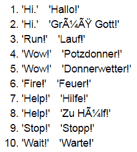
我们将使用前面的数据集来构建我们的神经机器翻译模型。
在进入建模部分之前，我们需要预处理输入数据。让我们开始吧:
data_cleaning <- function(sentence) {
sentence = gsub('[[:punct:] ]+',' ',sentence)
sentence = gsub("[^[:alnum:]\\-\\.\\s]", " ", sentence)
sentence = stringi::stri_trans_general(sentence, "latin-ascii")
sentence = tolower(sentence)
sentence
}
sentences <- map(sentences,data_cleaning)
english_sentences = list()
german_sentences = list()
for(i in 1:length(sentences)){
current_sentence <- sentences[i]%>%unlist()%>%str_split('\t')
english_sentences <- append(english_sentences,current_sentence[1])
german_sentences <- append(german_sentences,current_sentence[2])
}
然后，我们将数据转换成数据帧，以便于操作:
data <- do.call(rbind, Map(data.frame, "German"=german_sentences,"English"=english_sentences))
head(data,10)
以下屏幕截图以数据帧的形式显示了输入数据:
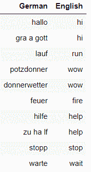
现在，我们可以看到德语和英语短语中所有句子的最大字数:
german_length = max(sapply(strsplit(as.character(data[,"German"] ), " "), length))
print(paste0("Maximum length of a sentence in German data:",german_length))
eng_length = max(sapply(strsplit(as.character(data[,"English"] ), " "), length))
print(paste0("Maximum length of a sentence in English data:", eng_length))
从下面的截图中，我们可以推断出德语句子的最大长度是10，而英语句子的最大长度是6:
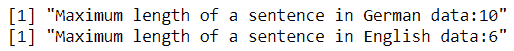
tokenization <- function(lines){
tokenizer = text_tokenizer()
tokenizer = fit_text_tokenizer(tokenizer,lines)
return(tokenizer)
}
在这里，我们准备德国记号赋予者:
german_tokenizer = tokenization(data[,"German"])
german_vocab_size = length(german_tokenizer$word_index) + 1
print(paste0('German Vocabulary Size:',german_vocab_size))
从下面的截图可以看出，德语词汇量为3542个:
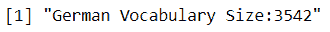
现在，我们准备英语分词器:
eng_tokenizer = tokenization(data[,"English"])
eng_vocab_size = length(eng_tokenizer$word_index) + 1
print(paste0('English Vocabulary Size:',eng_vocab_size))
从下面的截图我们可以看到，英语词汇量是2189:
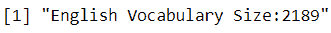
# Function to encode and pad sequences
encode_pad_sequences <- function(tokenizer, length, lines){
# Encoding text to integers
seq = texts_to_sequences(tokenizer,lines)
# Padding text to maximum length sentence
seq = pad_sequences(seq, maxlen=length, padding='post')
return(seq)
}
train_data <- data[1:9000,]
test_data <- data[9001:10000,]
我们准备培训和测试数据:
x_train <- encode_pad_sequences(german_tokenizer,german_length,train_data[,"German"])
y_train <- encode_pad_sequences(eng_tokenizer,eng_length,train_data[,"English"])
y_train <- to_categorical(y_train,num_classes = eng_vocab_size)
x_test <- encode_pad_sequences(german_tokenizer,german_length,test_data[,"German"])
y_test <- encode_pad_sequences(eng_tokenizer,eng_length,test_data[,"English"])
y_test <- to_categorical(y_test,num_classes = eng_vocab_size)
in_vocab = german_vocab_size
out_vocab = eng_vocab_size
in_timesteps = german_length
out_timesteps = eng_length
units = 512
epochs = 70
batch_size = 200
在这里，我们配置模型的层:
model <- keras_model_sequential()
model %>%
layer_embedding(in_vocab,units, input_length=in_timesteps, mask_zero=TRUE) %>%
layer_lstm(units = units) %>%
layer_repeat_vector(out_timesteps)%>%
layer_lstm(units,return_sequences = TRUE)%>%
time_distributed(layer_dense(units = out_vocab, activation='softmax'))
让我们来看看模型的总结:
summary(model)
下面的屏幕截图显示了翻译模型的摘要:
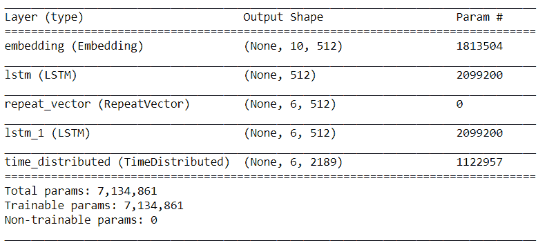
model %>% compile(optimizer = "adam",loss = 'categorical_crossentropy')
然后，我们定义回调和检查点:
model_name <- "model_nmt"
checkpoint_dir <- "checkpoints_nmt"
dir.create(checkpoint_dir)
filepath <- file.path(checkpoint_dir, paste0(model_name,"weights.{epoch:02d}-{val_loss:.2f}.hdf5",sep=""))
cp_callback <- list(callback_model_checkpoint(mode = "min",
filepath = filepath,
save_best_only = TRUE,
verbose = 1))
接下来，我们将训练数据拟合到模型中:
model %>% fit(x_train,y_train,epochs = epochs,batch_size = batch_size,validation_split = 0.2,callbacks = cp_callback,verbose = 2)
predicted = model %>% predict_classes(x_test)
让我们创建一个函数，它将创建一个单词index的键值对的反向列表。我们将用它来解码德语和英语中的短语:
reverse_word_index <- function(tokenizer){
reverse_word_index <- names(tokenizer$word_index)
names(reverse_word_index) <- tokenizer$word_index
return(reverse_word_index)
}
german_reverse_word_index <- reverse_word_index(german_tokenizer)
eng_reverse_word_index <- reverse_word_index(eng_tokenizer)
让我们从德语的测试数据中解码一个示例短语，并查看它在英语中的预测:
index_to_word <- function(data_sample,word_index_dict){
phrase = list()
for(i in 1:length(data_sample)){
index = data_sample[[i]]
word = word_index_dict[index]
# word = if(!is.null(word)) word else "?"
phrase = paste0(phrase," ",word)
}
return(phrase)
}
现在，我们可以打印一些德语句子示例及其英语原文和预测译文:
cat(paste0("The german sample phrase is -->",index_to_word(x_test[90,],german_reverse_word_index)))
cat('\n')
cat(paste0("The actual translation in english is -->",as.character(test_data[90,"English"])))
cat('\n')
cat(paste0("The predicted translation in english is -->",index_to_word(predicted[90,],eng_reverse_word_index)))
下面的屏幕截图显示了我们的模型正在完成的一个翻译示例。我们可以看到我们的模型做得很好:
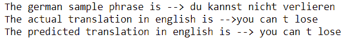
让我们再看一个翻译，如下面的代码所示:
cat(paste0("The german sample phrase is -->",index_to_word(x_test[6,],german_reverse_word_index)))
cat('\n')
cat(paste0("The actual translation in english is -->",as.character(test_data[6,"English"])))
cat('\n')
cat(paste0("The predicted translation in english is -->",index_to_word(predicted[6,],eng_reverse_word_index)))
下面的屏幕截图显示了我们的模型完成的另一个准确的翻译:
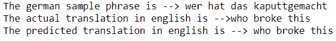
现在，让我们继续这个模型的本质，看看它是如何工作的详细解释。
在步骤1 中，我们对原始数据进行了预处理，删除了所有标点符号和非字母数字字符，将所有Unicode字符规范化为ASCII，并将所有数据转换为小写。我们创建了德语和英语短语列表，并将它们组合成一个数据框架，以便于数据操作。
在序列到序列模型中，输入和输出短语都需要转换成固定长度的整数序列。因此，在步骤2 中，我们计算了每个列表中最长语句的字数，这将用于在接下来的步骤中填充相应语言的句子。
接下来，在步骤3 中，我们为德语和英语短语创建了标记器。为了使用语言模型，我们将输入文本分解成标记。标记化为我们提供了一个索引列表，该列表由根据数据集中的总频率进行索引的单词组成。
text_tokenizer()的num_words参数可用于根据单词索引列表中的词频定义要保留的最大单词数。
在步骤4 中，我们创建了一个函数，通过使用texts_to_sequences()函数将德语和英语文本映射到一个特定的整数值序列。每个整数代表我们在上一步中创建的字典中的一个特定单词。该函数还用零填充这些序列，以使所有序列的长度一致，这基本上是该语言的最大句子长度。注意，pad_sequences()函数中的padding='post'参数在每个序列的末尾填充零。接下来，在步骤5 中，我们将数据分成训练和测试数据集，并通过应用我们在上一步骤中创建的自定义encode_pad_sequences函数将它们编码成序列。
在步骤6 中，我们定义了序列到序列模型的配置。我们使用编码器-解码器LSTM模型，其中输入序列由编码器模型编码，然后由解码器逐字解码文本。编码器由一个嵌入层和一个LSTM层组成，而解码器模型由另一个LSTM层和一个密集层组成。编码器中的嵌入层将输入特征空间转换成具有 n 维的潜在特征；在我们的例子中，它将其转换成512个潜在特征。在这种架构中，编码器产生输出的二维矩阵，其长度等于层中存储单元的数量。解码器期望3D输入产生解码的序列。对于这个问题，我们使用了layer_repeat_vector()，它将提供的2D输入重复多次，以创建一个3D输出，正如解码器所预期的那样。
在下一步中，我们编译模型并使用训练数据对其进行训练。对于模型编译，我们使用RMSprop作为优化器，使用categorical_crossentropy作为损失函数。为了训练模型，我们对训练和验证数据集分别使用了80:20的拆分。我们对模型进行了50个时期的训练，批次大小为500。然后，我们绘制了训练损失和验证损失。
在最后一步中，我们从测试数据集中预测了一个德语短语的英语翻译。我们创建了一个定制的reverse_word_index函数，以便为德语和英语创建索引和单词的键值对。然后，我们利用这个函数将整数序列的输出映射到单词。
评估生成文本的质量类似于评估标签。双语评估替角 ( BLEU )分数是一个比较一段文本的生成翻译和参考翻译的流行指标，从0到1不等。生成的文本越接近原始文本，得分越高，1为完全匹配的得分。通过BLEU得分度量，将候选文本的n元语法与参考翻译的n元语法以及匹配的数量进行比较；这些匹配也是独立于位置的。此外，n元语法匹配以这样的方式被修改，即它不奖励任何这样的仅生成几个合理单词的翻译。这种技术被称为改进的n元语法精度。
例如，假设我们有以下参考文本和生成文本:
在这个例子中，我们可以看到候选文本2对参考文本有更好的预测，尽管候选文本1的精度可能更高。改进的n-gram精度为我们解决了这个问题。BLEU分数计算起来又快又容易。
然而，这一指标存在一些挑战。例如，它既不考虑句子的意思也不考虑它们的结构，所以它不能很好地映射到人类的判断。
与一个或多个参考翻译相比，我们还可以使用其他一些指标来评估生成的翻译的质量，例如用于Gisting评估的面向回忆的替角 ( 流氓)和用于评估具有显式排序的翻译的指标 ( 流星)。
有关更多可用资源:
随着互联网的发展，我们已经被来自各种来源的大量海量数据所淹没，例如新闻文章、社交媒体平台、博客等等。自然语言处理领域中的文本摘要是创建文本数据的简明和准确摘要的技术，捕捉与源文本一致的必要细节。
文本摘要有两种类型，如下所示:
编码器-解码器LSTM架构已被证明能够有效地解决序列间问题，并且能够处理多个输入和输出。在这个配方中，我们将通过引入一种称为教师强制的技术，稍微修改我们在上一个配方中使用的标准独热编码器-解码器架构。教师强制是一种常用于训练递归网络的策略，它使用前一时间步的模型输出作为下一时间步的输入。在这种体系结构中，编码器获取输入文本并将其转换为固定长度的内部表示，从而适当地捕获输入文本的上下文。解码器使用编码器生成的内部表示以及已经生成的单词或短语序列作为摘要。因此，在这种体系结构中，解码器可以灵活地利用到目前为止已经生成的所有单词的分布式表示作为预测下一个单词的输入。
在这个食谱中，我们将使用来自Kaggle的著名亚马逊美食评论数据集，该数据集可以从https://www.kaggle.com/snap/amazon-fine-food-reviews下载。这些数据由亚马逊的美食评论组成，时间跨度超过10年。在我们的分析中，我们将只使用综述文本及其摘要。
让我们从加载所需的库开始:
pckgs <- c("textclean","keras","stringr","tm","qdap")
lapply(pckgs, library, character.only = TRUE ,quietly = T)
现在，我们从数据中读取两列，文本和摘要。我们将只使用前10，000条评论:
reviews <- read.csv("data/Reviews.csv", nrows = 10000)[,c('Text', 'Summary')]
head(reviews)
下面的屏幕截图显示了输入数据中的一些记录:
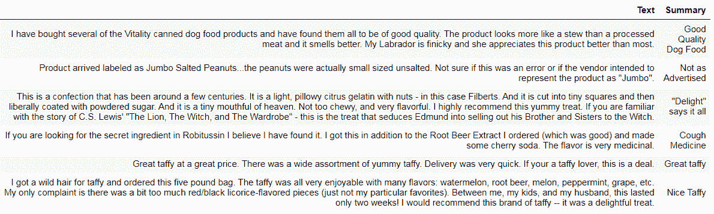
我们只对那些在数据中既有文本信息又有摘要信息的行感兴趣:
reviews <- reviews[complete.cases(reviews),]
rownames(reviews) <- 1:nrow(reviews)
在下一节中，我们将对输入数据进行预处理，并为文本摘要建立一个模型。
在跳到模型构建部分之前，让我们清理输入数据:
clean_data <- function(data,remove_stopwords = TRUE){
data <- tolower(data)
data = replace_contraction(data)
data = gsub('<br />', '', data)
data = gsub('[[:punct:] ]+',' ',data)
data = gsub("[^[:alnum:]\\-\\.\\s]", " ", data)
data = gsub('&', '', data)
data = if(remove_stopwords == "TRUE"){paste0(unlist(rm_stopwords(data,tm::stopwords("english"))),collapse = " ")}else{data}
data = gsub('\\.', "", data)
data = gsub('\\s+', " ", data)
return(data)
}
cleaned_text <- unlist(lapply(reviews$Text,clean_data,remove_stopwords = TRUE))
cleaned_summary <- unlist(lapply(reviews$Summary,clean_data,remove_stopwords = FALSE))
# Adding cleaned reviews and their summaries in a dataframe
cleaned_reviews <- data.frame("Cleaned_Text"= cleaned_text,"Cleaned_Summary"= cleaned_summary)
# Converting the Text and Summary columns to character datatypes
cleaned_reviews$Cleaned_Text <- as.character(cleaned_reviews$Cleaned_Text)
cleaned_reviews$Cleaned_Summary <- as.character(cleaned_reviews$Cleaned_Summary)
head(cleaned_reviews)
下面的屏幕截图显示了来自已清理数据的一些样本记录:
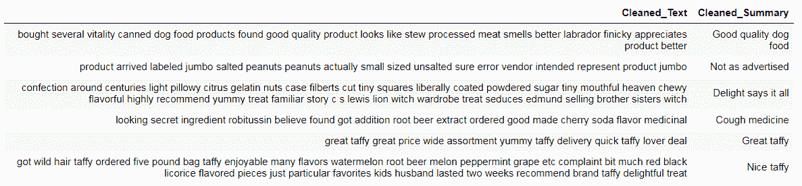
cleaned_reviews[,"Cleaned_Summary"] <- sapply(X = cleaned_reviews[,2],FUN = function(X){paste0("<start> ",X," <end>")})
max_length_text = 110
max_length_summary = 10
tokenization <- function(lines){
tokenizer = text_tokenizer()
tokenizer = fit_text_tokenizer(tokenizer, lines)
return(tokenizer)
}
我们在文本数据上准备一个标记器，并计算文本数据的词汇大小:
x_tokenizer <- tokenization(cleaned_reviews$Cleaned_Text)
x_tokenizer$word_index
x_voc_size = length(x_tokenizer$word_index) +1
print(paste0('Xtrain vocabulary size:', x_voc_size))
以下屏幕截图显示了来自标记化文本数据的单词示例:
然后，我们在汇总数据上准备一个标记器，并计算汇总数据的词汇大小:
y_tokenizer <- tokenization(cleaned_reviews$Cleaned_Summary)
y_tokenizer$word_index[1:5]
y_voc_size = length(y_tokenizer$word_index) +1
print(paste0('Ytrain data vocabulary size:', y_voc_size))
以下屏幕截图显示了来自标记化摘要数据的单词示例:
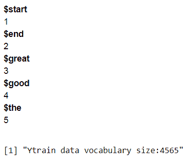
encode_pad_sequences <- function(tokenizer, length, lines){
# Encoding text to integers
seq = texts_to_sequences(tokenizer,lines)
# Padding text to maximum length sentence
seq = pad_sequences(seq, maxlen=length, padding='post')
return(seq)
}
我们将数据分为训练和验证数据集:
sample_size <- floor(0.80 * nrow(cleaned_reviews))
## Setting the seed to make the partition reproducible
set.seed(0)
train_indices <- sample(seq_len(nrow(cleaned_reviews)), size = sample_size)
x_train <- cleaned_reviews[train_indices,"Cleaned_Text"]
y_train <- cleaned_reviews[train_indices,"Cleaned_Summary"]
x_val <- cleaned_reviews[-train_indices,"Cleaned_Text"]
y_val <- cleaned_reviews[-train_indices,"Cleaned_Summary"]
现在，我们将训练和验证数据集编码成整数序列，并将这些序列填充到它们各自的最大长度:
num_train_examples = length(x_train)
num_val_examples = length(x_val)
x <- encode_pad_sequences(x_tokenizer,max_length_text,x_train)
x_val <- encode_pad_sequences(x_tokenizer,max_length_text,x_val)
y_encoded <- encode_pad_sequences(y_tokenizer,max_length_summary,y_train)
y1 <- encode_pad_sequences(y_tokenizer,max_length_summary,y_train)[,-max_length_summary]
y2 <- encode_pad_sequences(y_tokenizer,max_length_summary,y_train)[,-1]
y2 <- array_reshape(x = y2,c(num_train_examples,(max_length_summary-1),1))
y_val_encoded <- encode_pad_sequences(y_tokenizer,max_length_summary,y_val)
y_val1 <- encode_pad_sequences(y_tokenizer,max_length_summary,y_val)[,-max_length_summary]
y_val2 <- encode_pad_sequences(y_tokenizer,max_length_summary,y_val)[,-1]
y_val2 <- array_reshape(x = y_val2,c(num_val_examples,(max_length_summary-1),1))
latent_dim = 500
batch_size = 200
epochs = 100
在这里，我们配置模型的编码器和解码器部分的层。我们使用的是堆叠式LSTM配置，三层LSTM堆叠在一起。
让我们配置网络的编码器部分:
# Defining and processing the input sequence
encoder_inputs <- layer_input(shape=c(max_length_text),name = "encoder_inputs")
# Adding an embedding layer to encoder
embedding_encoder <- encoder_inputs %>% layer_embedding(input_dim = x_voc_size, output_dim = latent_dim,trainable = TRUE,name = "encoder_embedding")
# Adding first LSTM layer to encoder
encoder_lstm1 <- layer_lstm(units=latent_dim, return_sequences = TRUE, return_state=TRUE, name = "encoder_lstm1")
encoder_results1 <- encoder_lstm1(embedding_encoder)
encoder_output1 <- encoder_results1[1]
state_h1 <- encoder_results1[2]
state_c1 <- encoder_results1[3]
# Adding second LSTM layer to encoder
encoder_lstm2 <- layer_lstm(units=latent_dim, return_sequences = TRUE, return_state=TRUE,name = "encoder_lstm2")
encoder_results2 <- encoder_lstm2(encoder_output1)
encoder_output2 <- encoder_results2[1]
state_h2 <- encoder_results2[2]
state_c2 <- encoder_results2[3]
# Adding third LSTM layer to encoder
encoder_lstm3 <- layer_lstm(units=latent_dim, return_sequences = TRUE, return_state=TRUE, name = "encoder_lstm3")
encoder_results3 <- encoder_lstm3(encoder_output2)
encoder_outputs <- encoder_results3[1]
state_h <- encoder_results3[2]
state_c <- encoder_results3[3]
encoder_states <- encoder_results3[2:3]
让我们配置网络的解码器部分:
# Setting up the decoder
decoder_inputs <- layer_input(shape=list(NULL),name = "decoder_inputs")
# Adding embedding layer to decoder
embedding_layer_decoder <- layer_embedding(input_dim = y_voc_size,output_dim = latent_dim,trainable = TRUE,name = "decoder_embedding")
embedding_decoder <- embedding_layer_decoder(decoder_inputs)
# Adding lstm layer to decoder
decoder_lstm <- layer_lstm(units=latent_dim, return_sequences=TRUE,return_state=TRUE,name="decoder_lstm")
decoder_results <- decoder_lstm(embedding_decoder, initial_state=encoder_states)
decoder_outputs <- decoder_results[1]
decoder_fwd_state <- decoder_results[2]
decoder_back_state <- decoder_results[3]
decoder_dense <- time_distributed(layer = layer_dense(units = y_voc_size, activation='softmax'))
decoder_outputs <- decoder_dense(decoder_outputs[[1]])
现在，我们需要将编码器和解码器合并到一个模型中:
model <- keras_model(inputs = c(encoder_inputs, decoder_inputs),outputs = decoder_outputs)
让我们来看看模型的总结:
summary(model)
下面的屏幕截图显示了组合模型的摘要:
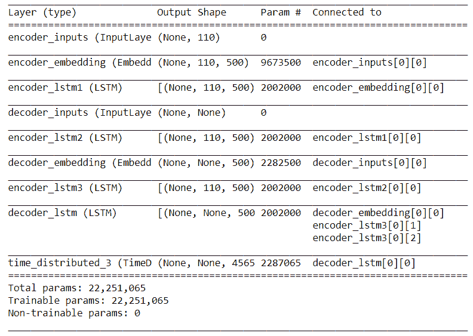
model %>% compile(optimizer = "rmsprop",loss = 'sparse_categorical_crossentropy')
让我们为模型定义回调和检查点:
model_name <- "model_TextSummarization"
# Checkpoints
checkpoint_dir <- "checkpoints_text_summarization"
dir.create(checkpoint_dir)
filepath <- file.path(checkpoint_dir, paste0(model_name,"weights.{epoch:02d}-{val_loss:.2f}.hdf5",sep=""))
# Callback
ts_callback <- list(callback_model_checkpoint(mode = "min",
filepath = filepath,
save_best_only = TRUE,
verbose = 1,
callback_early_stopping(patience = 100)))
现在，我们可以训练模型:
model %>% fit(x = list(x,y1),y = y2,epochs = epochs,batch_size = batch_size,validation_data = list(list(x_val,y_val1),y_val2),callbacks = ts_callback,verbose = 2)
让我们从创建一个函数开始，这个函数将生成单词index的键值对的反向列表。我们将使用它来解码文本和摘要中的内容，因为这个反向单词索引会将整数序列映射回单词，并使内容可读:
reverse_word_index <- function(tokenizer){
reverse_word_index <- names(tokenizer$word_index)
names(reverse_word_index) <- tokenizer$word_index
return(reverse_word_index)
}
x_reverse_word_index <- reverse_word_index(x_tokenizer)
y_reverse_word_index <- reverse_word_index(y_tokenizer)
# Reverse-lookup token index to decode sequences back to meaningful sentences or phrases
reverse_target_word_index=y_reverse_word_index
reverse_source_word_index=x_reverse_word_index
target_word_index= y_tokenizer$word_index
以下代码块显示了对句子进行解码的推理模式:
# Defining sampling models
encoder_model <- keras_model(inputs = encoder_inputs, outputs = encoder_results3)
decoder_state_input_h <- layer_input(shape=latent_dim)
decoder_state_input_c <- layer_input(shape=latent_dim)
decoder_hidden_state_input <- layer_input(shape = c(max_length_text,latent_dim))
decoder_embedding2 <- embedding_layer_decoder(decoder_inputs)
decoder_results2 <- decoder_lstm(decoder_embedding2,initial_state = c(decoder_state_input_h,decoder_state_input_c))
decoder_outputs2 <- decoder_results2[1]
state_h2 <- decoder_results2[2]
state_c2 <- decoder_results2[3]
decoder_outputs2 <- decoder_dense(decoder_outputs2[[1]])
inp = c(decoder_hidden_state_input,decoder_state_input_h,decoder_state_input_c)
dec_states = c(state_h2,state_c2)
decoder_model <- keras_model(inputs = c(decoder_inputs,inp),outputs = c(decoder_outputs2,dec_states))
这里我们定义一个叫做decode_sequence()的函数，它是推理过程的实现。该函数对输入序列进行编码，并检索编码器状态。然后，它运行解码器的一个步骤，以编码器状态作为初始状态，以序列标记的开始作为目标。输出是下一个目标令牌。通过这种方式，通过递归调用模型，将前面生成的单词附加到模型上，从而构建摘要:
decode_sequence <- function(input_seq) {
# Encoding the input as state vectors
encoder_predict <- predict(encoder_model, input_seq)
e_out = encoder_predict[[1]]
e_h = encoder_predict[[2]]
e_c = encoder_predict[[3]]
# Generating empty target sequence of length 1
target_seq <- array(0,dim = c(1,1))
# Populating the first character of target sequence with the start character.
target_seq[1,1] <- target_word_index[['start']]
stop_condition = FALSE
decoded_sentence = ''
niter = 1
while (stop_condition==FALSE) {
decoder_predict <- predict(decoder_model, list(target_seq, e_out,e_h,e_c))
output_tokens <- decoder_predict[[1]]
h <- decoder_predict[[2]]
c <- decoder_predict[[3]]
## Sampling a token
sampled_token_index <- which.max(output_tokens[1, 1, ])
sampled_token <- reverse_target_word_index[sampled_token_index]
if (sampled_token != 'end'){
decoded_sentence = paste0(decoded_sentence, sampled_token," ")
if(sapply(strsplit(decoded_sentence, " "), length) >= max_length_summary){
stop_condition = TRUE
}
}
target_seq <- array(0,dim = c(1,1))
target_seq[ 1,1] <- sampled_token_index
e_h = h
e_c = c
}
return(decoded_sentence)
}
现在，我们需要定义几个函数，以便将整数序列转换成单词序列，用于回顾和总结:
seq2summary<- function(input_seq){
newString=''
for(i in input_seq){
if((i!=0 & i!=target_word_index[['start']]) & i!=target_word_index[['end']]){
newString=paste0(newString,reverse_target_word_index[[i]],' ')
}
}
return(newString)
}
seq2text <- function(input_seq){
newString=''
for(i in input_seq){
if(i!=0){
newString=paste0(newString,reverse_source_word_index[[i]],' ')
}
}
return(newString)
}
以下代码显示了如何解码示例评论并查看其摘要预测:
for(i in 1:dim(x_val)[1]){
print(paste0("Review:",seq2text(x_val[i,])))
print(paste0("Original summary:",seq2summary(y_val_encoded[i,])))
print(paste0("Predicted summary:",decode_sequence(array_reshape(x_val[i,],dim= c(1,max_length_text)))))
print("\n")
}
让我们来看看其中一篇评论的翻译示例:
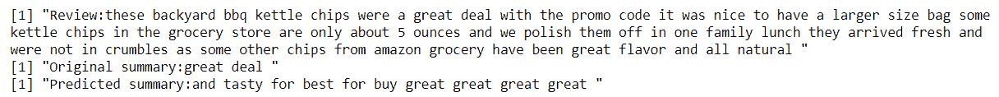
通过这样做，我们已经了解了如何使用编码器-解码器模型实现一个抽象的文本摘要。
在步骤1 中，我们对文本和摘要中的原始数据进行了预处理，将所有数据转换为小写，并分别替换诸如“不要”、“我是”、to、“不要”和“我是”等缩写。然后，我们删除了所有标点符号、非字母数字字符和停用词，如“我”、“我”、“您”、“for”等等。
请注意，我们没有从摘要中删除任何停用词，因为这样做会导致摘要的含义发生变化。例如，一个写着“没那么好”的总结在去掉任何停用词后会变成“很好”。
在步骤2 中，我们在摘要中放置了特殊的开始和结束标记，在本例中是目标文本。目标序列的第一个字的预测发生在为模型提供开始标记时。结束标记表示句子的结束。
在下一步中，我们固定了源句子和目标句子的长度，这些句子将用于在接下来的步骤中填充序列，以使它们的长度一致。请注意，我们已经根据大多数评论的分布情况决定了最大长度。接下来，在步骤4 中，我们为源短语和目标短语创建了分词器。标记化为我们提供了一个索引列表，该列表由根据数据集中的总频率进行索引的单词组成。
在步骤5 中，我们创建了一个名为encode_pad_sequences()的定制函数，将评论和相关摘要映射到一个特定的整数值序列。每个整数代表上一步中创建的索引列表中的一个特定单词。该函数还用零填充序列，使所有序列长度一致，这基本上是我们在步骤3 中为源文本和目标文本固定的最大长度。pad_sequences()函数中的padding='post'参数在每个序列的末尾填充零。我们将数据分成训练和测试数据集，并对它们应用encode_pad_sequences()函数。注意，在这一步中，我们从已经生成的概要中创建了附加的输入数据，标记为y1，用于训练模型。目标数据y2比输入数据超前一步，不包括开始标记。验证数据也是如此。
在步骤6 中，我们配置了一个堆栈式LSTM编码器-解码器模型架构。首先，我们创建了编码器网络，然后是解码器网络。编码器LSTM网络将输入评论转换成它的两个状态向量:隐藏状态和单元状态。我们丢弃了编码器的输出，只保留了状态信息。解码器LSTM被配置成学习将目标序列(即，概要信息的内部表示)转换成相同的序列，但是在未来偏移一个时间步长。这种类型的培训被称为教师强迫。解码器LSTM的初始状态是来自编码器的状态向量。这样做是为了使解码器学习在时间 t+1 产生目标，给定时间 t 的目标，以输入序列为条件。
在步骤7 中，我们编译了模型并对其进行了训练，同时使用RMSprop作为优化器，使用sparse_categorical_crossentropy作为损失函数。这个损失函数将整数序列动态地转换成一个独热向量，并克服了内存问题。我们对模型进行了100个时期的训练，批量大小为200。
在步骤8 中，我们创建了一个推理模型，它生成未知输入序列的摘要。在这种推理模式下，我们对输入序列进行编码，得到状态向量。然后，我们生成一个大小为1的目标序列，它本质上是序列字符的开始(start)。接下来，这个目标序列和状态向量一起被送到解码器来预测下一个字。预测的样本字被附加到目标序列。同样的过程递归地进行，直到我们得到序列结束字(end)或者达到序列极限。这种模型架构为解码器提供了利用先前生成的单词以及源文本作为上下文来生成下一个单词的机会。最后，我们预测了一些样本评论的摘要。
已经提出的用于跨各种领域的神经机器翻译的许多流行模型属于编码器-解码器架构家族。然而，这种体系结构限制了编码器将输入序列编码成固定长度的表示，这导致对于过长的输入序列的性能恶化。克服这种性能瓶颈的方法之一是使用序列中的注意机制，这使得网络学会选择性地注意与预测目标输出相关的输入。最重要的是，注意力允许网络将输入序列编码成向量序列，并在解码时在这些向量中进行选择，从而使网络能够将所有信息编码在一个固定长度的向量中。尽管注意机制的思想起源于神经机器翻译的背景，但它可以扩展到广泛的问题，如图像字幕和描述、语音识别和文本摘要。
要了解更多关于注意力机制的信息，请参考以下论文:https://arxiv.org/pdf/1706.03762.pdf。
在过去的几十年里，有大量关于利用深度学习进行语音相关应用的研究。语音识别已经成为许多日常应用的一部分，例如我们的电话、智能手表、家庭、游戏等等。
苹果和亚马逊等科技巨头分别在Siri和Alexa等许多语音搜索应用程序中实现了这一显著功能。声波是时域信号，也就是说当我们绘制一个声波时，其中一个轴是时间(自变量)，另一个轴是波的振幅(因变量)。
为了创建声波的数字记录，我们通过执行采样将模拟声音信号转换成数字形式。采样通过以称为采样间隔的规则时间间隔测量因变量，将模拟音频信号转换为数字信号。采样间隔越小，声音质量越好。为了描述录音的质量，我们经常使用术语采样率来表示采样间隔。采样率定义了每秒钟从模拟声波中获取的样本数。
采样速率可以表示如下:
声音的时域表示并不总是最好的。最显著的信息隐藏在信号的频谱中。诸如傅立叶变换 ( FT )的数学变换被用于将声波变换到其频域。当我们在时域中对信号进行傅立叶变换时，我们获得了它的频率-振幅表示。由于声音的数字记录是一个时间上的离散过程，我们使用离散傅立叶变换 ( DFT )将其转换到频域。快速傅立叶变换 ( FFT )是一种用于快速计算傅立叶变换的算法。对整个声音计算FFT不够信息量大。为了提取更多的信息，我们需要使用短时傅立叶变换 ( STFT )。在STFT，我们在信号上滑动一个窗口，并在每个滑动窗口计算DFT，以计算频谱的幅度。
在这个食谱中，我们将训练一个神经网络，它学习根据频谱对声波进行分类。为此，我们将使用谷歌语音命令数据集。它是由TensorFlow和AIY团队创建的，用于展示使用TensorFlow API的语音识别示例。它包含许多口语单词的录音，每个录音以16 kHz采样。可以从https://storage . cloud . Google . com/download . tensor flow . org/data/speech _ commands _ v 0.01 . tar . gz下载。我们将使用tuneR包读取WAV文件，使用seewave包对音频信号进行STFT。
让我们从导入所需的库开始:
library(seewave)
library(stringr)
library(keras)
library(tuneR)
library(splitstackshape)
我们现在加载一个示例，并查看wave对象:
# read file
wav_file = readWave("data/data_speech_commands_v0.01/no/012c8314_nohash_0.wav")
wav_file
在下面的屏幕截图中，我们可以看到wave对象有16，000个数据点，采样率为16 kHz，持续时间为1秒:
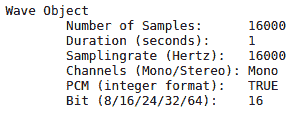
现在，让我们访问这些属性:
# sample
head(wav_file@left)
# sampling rate
paste("Sampling rate of the audio:", wav_file@samp.rate)
# num of samples
paste("Number of samples in the audio:",length(wav_file@left))
# duration of audio
paste("Duration of audio is:",length(wav_file@left)/wav_file@samp.rate,"second")
以下屏幕截图显示了波形对象的属性:
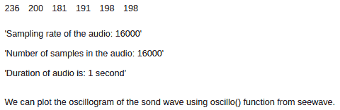
让我们将这些波形属性保存到一些变量中:
# wave data
wave_data = wav_file@left
# Number of data samples
num_samples = length(wav_file@left)
# sampling rate of the wave
sampling_rate = wav_file@samp.rate
我们可以使用seewave包中的oscillo()功能绘制声波的波形图:
# plot oscillogram
oscillo(wave = wav_file,f = sampling_rate)
下图显示了我们的波形数据的波形图:
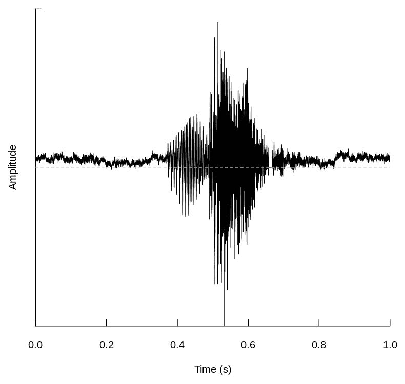
现在，我们可以画出这个波的声谱图。频谱图是信号频谱随时间变化的直观表示。下图是2D声谱图和示波图的组合。
在下面的代码块中，我们正在设置声谱图的参数并生成图。下面代码块中三个参数的定义是:
我们使用seewave包中的spectro()函数来绘制声谱图:
window_length = 512
overlap = 40
window_type = "hanning"
# plot spectrogram
spectro(wav_file, f=sampling_rate, wl=512, ovlp=40, osc=TRUE,colgrid="white", colwave="white", colaxis="white", collab="white", colbg="black")
下图显示了波的频谱图:
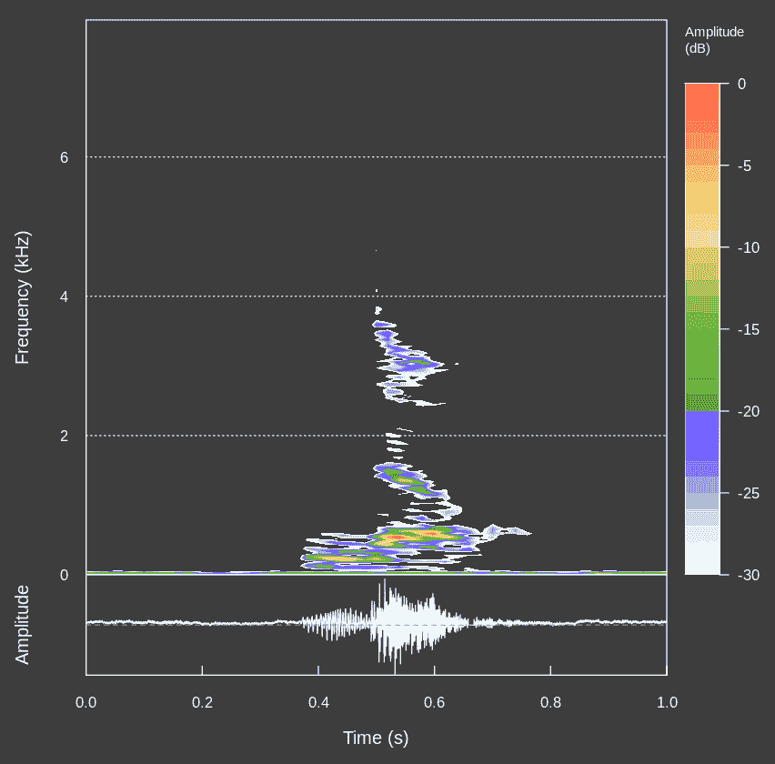
spectro()函数还返回基于STFT时间、频率和振幅轮廓的统计数据。如果complex参数设置为true，它将为我们提供复数值:
stft_wave = spectro(wave_data,f = sampling_rate,wl = window_length,ovlp = overlap,wn = window_type,complex = T,plot = F,dB = NULL,norm = F)
str(stft_wave)
下面的屏幕截图显示了由spectro()函数返回的值的结构:
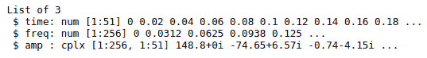
现在，让我们看看振幅等值线的维度:
dim(stft_wave$amp)
振幅轮廓中的行数代表我们在一个窗口中获得振幅的频率数(256)。每一列都是window_length/2的傅立叶变换。让我们将它存储在一个变量中:
# fft size
fft_size = window_length/2
振幅等值线中的列数代表FFT窗口的数量。下面的代码块实现了提取相同内容的公式:
# number of fft window
num_fft_windows = length(seq(1, num_samples + 1 - window_length, window_length - (overlap * window_length/100)))
到目前为止，我们已经学习了如何提取声波的属性，并且熟悉了波的变换。现在，让我们对波形数据进行预处理，以便构建一个语音识别系统。
语音命令数据集包含大约65，000个WAV文件。它包含带有标签名称的子文件夹，其中每个文件是由不同的说话者说出的30个单词中的一个的记录。在本菜谱的准备部分，我们学习了如何读取WAV文件并通过应用STFT获得其频率-振幅表示。在这一节中，我们将扩展相同的想法，编写一个生成器，然后训练一个神经网络来识别口语单词。
让我们首先为生成器准备一个数据集:
files = list.files("data/data_speech_commands_v0.01",all.files = T,full.names = F,recursive = T)
paste("Number audio files in dataset: ",length(files)
file_df = as.data.frame(files)
head(file_df)
下面的屏幕截图显示了数据中的一些记录:
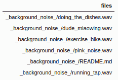
在这里，我们可以看到所有的文件都有它们的标签名作为前缀。现在，让我们创建一个包含所有文件名和它们各自的类标签的数据帧。我们将使用三个类，即bird、no和off:
file_df$class = str_split_fixed(file_df$files,pattern = "/",n = 2)[,1]
file_df <- file_df[sample(nrow(file_df)),]
rownames(file_df) <- NULL
file_df = file_df[file_df$class %in% c("bird","no","off"),]
file_df$files <- as.character(file_df$files)
file_df$class <- as.numeric(as.factor(file_df$class)) -1
rownames(file_df) <- NULL
head(file_df)
下面的屏幕截图显示了我们在前面的代码块中创建的DataFrame的示例:
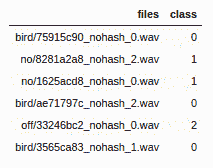
让我们创建一个表示唯一标签数量的变量:
num_speech_labels = length(unique(file_df$class))
# split data into train, test and validation
set.seed(200)
train_index = stratified(file_df,group = "class",.80,keep.rownames = T)$rn
test_index = setdiff(row.names(file_df),train_index)
val_index = stratified(file_df[train_index,],group = "class",.20,keep.rownames = T)$rn
train_data = file_df[setdiff(train_index,val_index),]
test_data = file_df[test_index,]
val_data = file_df[val_index,]
现在，让我们重组训练和测试数据:
# shuffle train and test data
test_data = test_data[sample(nrow(test_data)),]
train_data = train_data[sample(nrow(train_data)),]
model <- keras_model_sequential()
model %>%
layer_conv_2d(input_shape = c(fft_size, num_fft_windows,1),
filters = 32, kernel_size = c(3,3), activation = 'relu') %>%
layer_max_pooling_2d(pool_size = c(2, 2)) %>%
layer_conv_2d(filters = 64, kernel_size = c(3,3), activation = 'relu') %>%
layer_max_pooling_2d(pool_size = c(2, 2)) %>%
layer_dropout(rate = 0.25) %>%
layer_flatten() %>%
layer_dense(units = 128, activation = 'tanh') %>%
layer_dense(units = num_speech_labels, activation = 'softmax')
构建模型后，我们需要编译并可视化其摘要:
# compile model
model %>% compile(
loss = "categorical_crossentropy",
optimizer = "rmsprop",
metrics = c('accuracy')
)
summary(model)
下面的屏幕截图显示了模型的概要:
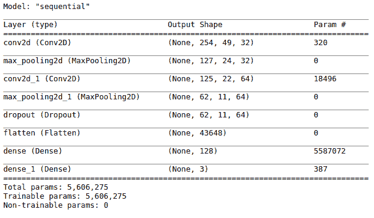
data_generator <- function(data,windowlen,overlap,numfftwindows,fftsize,windowtype,num_classes,batchsize) {
function(){
indexes <- sample(1:nrow(data), batchsize, replace = TRUE)
x <- array(0, dim = c(length(indexes),fftsize, numfftwindows,1))
y <- array(0, dim = c(length(indexes)))
for (j in 1:length(indexes)){
wav_file_name = data[indexes[j],"files"] %>% as.character()
wav_file = readWave(paste0("data/data_speech_commands_v0.01/",wav_file_name))
# wave attributes
wave_data = wav_file@left
num_samples = length(wav_file@left)
sampling_rate = wav_file@samp.rate
# accomodating varying input lengths
if(num_samples < 16000){
zero_pad = rep(0,16000 - length(wave_data))
wave_data = c(wave_data,zero_pad)
}else if(num_samples > 16000){
wave_data = wave_data[1:16000]
}
# spectrogram representaion
spectrogram_data = spectro(wave_data,f = sampling_rate ,wl = windowlen,ovlp = overlap,wn = windowtype,complex = T,plot = F,dB = NULL,norm = F)
spectrogram_data = spectrogram_data$amp
spectrogram_data = Mod(spectrogram_data)
# imputing NaN and Inf
if((sum(is.nan(spectrogram_data))> 0)){
spectrogram_data[which(is.nan(spectrogram_data))] = log(0.01)
}else if((sum(is.infinite(spectrogram_data)) >0)){
spectrogram_data[which(is.infinite(spectrogram_data))] = log(0.01)
}else if((sum(is.infinite(spectrogram_data)) >0)){
spectrogram_data[which(is.na(spectrogram_data))] = log(0.01)
}
spectrogram_data = array_reshape(spectrogram_data,dim = c(fftsize,numfftwindows,1))
x[j,,,] = spectrogram_data
y[j] = data[indexes[j],c("class")] %>% as.matrix()
}
list(x, to_categorical(y,num_classes = num_classes))
}
}
让我们设置批量大小和时期数，然后创建训练和验证生成器:
batch_size = 20
epochs = 2
# train and validation generator
train_generator = data_generator(data = train_data,windowlen = window_length,overlap = overlap,numfftwindows = num_fft_windows,fftsize = fft_size, windowtype = window_type,num_classes = num_speech_labels,batchsize = batch_size)
val_generator = data_generator(data = val_data,windowlen = window_length,overlap = overlap,numfftwindows = num_fft_windows,fftsize = fft_size, windowtype = window_type,num_classes = num_speech_labels,batchsize = batch_size)
# model callbacks
model_name = "speech_rec_"
checkpoint_dir <- "checkpoints_speech_recognition"
dir.create(checkpoint_dir)
filepath <- file.path(checkpoint_dir, paste0(model_name,"weights.{epoch:02d}-{val_loss:.2f}.hdf5",sep=""))
cp_callback <- list(callback_model_checkpoint(mode = "auto",
filepath = filepath,
save_best_only = TRUE,
verbose = 1),
callback_early_stopping(min_delta = 0.05,patience = 10))
# train model
model %>% fit_generator(generator = train_generator,
epochs = epochs,
steps_per_epoch = nrow(train_data)/batch_size,
validation_data = val_generator ,
validation_steps = nrow(val_data)/batch_size,
callbacks = cp_callback
)
# test sample
test = readWave("data/data_speech_commands_v0.01/no/0132a06d_nohash_2.wav")
# matrix corresponding to the amplitude values
test = spectro(test,wl = window_length,ovlp = overlap,wn = "hanning",complex = T,plot = F,dB = NULL,norm = F)
test = test$amp
test = array_reshape(test,dim = c(fft_size,num_fft_windows,1))
# predict label of test sample.
model %>% predict_classes( array_reshape(test,dim = c(1,fft_size,num_fft_windows,1)))
太好了！该模型正确地识别口语单词。
在步骤1 中，我们为生成器准备了一个数据集。我们创建了一个数据帧，其中包含音频文件的文件路径和类标签。在下一步中，我们创建了分层样本，并将数据帧分为训练集、测试集和验证集。在步骤3 中，我们创建了我们的卷积神经网络，并对其进行了编译。
在步骤4 中，我们构建了一个数据生成器，并创建了训练和验证生成器。生成器功能从磁盘读取音频文件，将每个信号转换为其频率-振幅表示，并批量输出数据。我们知道语音命令数据集以16 kHz采样；也就是说，对于1秒钟的记录，有16，000个样本。数据集还包含一些短于或长于1秒的音频文件。为了适应不同长度的录音，我们将音频数据填充/截断为一个长度为16，000的数组，并应用了STFT。在本配方的准备好部分，我们观察到以16 kHz采样的1秒钟记录的STFT产生一个大小为256x51的数组(fft_size * num_fft_windows)。这就是我们为模型的第一个卷积层定义了一个输入形状fft_size * num_fft_windows的原因。
在步骤5 中，我们定义了模型回调。在最后一步中，我们训练了我们的模型，并在测试样本上测试了它的预测。
在这个食谱的准备部分，我们使用STFT将声波转换成它的频率-振幅表示。为了计算梅尔倒谱系数 ( MFCC )，可以对波谱图进行进一步的变换。梅尔频率倒谱 ( MFC )用于表示声音的短期功率谱。Mel-频率倒谱系数(MFCC)组成一个MFC，代表一个音频信号的频谱能量分布。MFCC工作在人耳可以捕捉到的类似频率上。
MFCCs是这样计算的:
R中的tuneR包提供了melfcc()函数，这样我们就可以计算MFCCs。我们可以使用下面的代码来获取MFCCs:
melfcc(wav_file)
你也可以用MFCC建立一个语音识别系统。